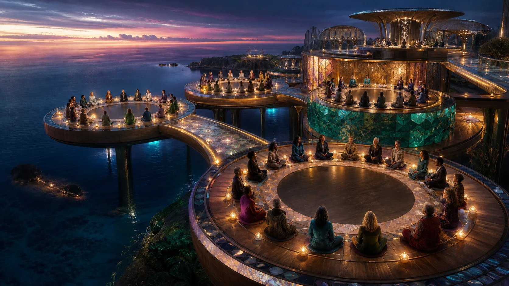

A shared asset
The agreement records who owns it, whose contribution is recognised and what happens to a member's interest when they leave.

A co-operative offers one way for people to share expensive infrastructure while keeping purpose, membership, ownership and local relationships visible.
Imagined concept artwork
The regional model is a network of locally shaped relationships, not one agreement stretched across every place. One group may share a sauna. Another may begin with local compute, food, rest or a supervised clinical relationship.
Queensland is the first legal starting context in this source set. Other Oceania jurisdictions bring their own co-operative, health, privacy, cultural and financial settings.
Queensland recognises distributing and non-distributing co-operatives. The usual starting point is at least five active members, with a lower number subject to approval.
The project remains an exploration. It is not a registered co-operative and it does not speak for a future local group.
Established information Queensland co-operatives informationEach facet opens a different local conversation. Together they form a guidepost rather than a ready-made rulebook.
A shared purpose may begin with wellbeing access, local digital infrastructure, food, resilience, research or a mixture shaped by the members.
Which shared benefit feels most alive in this place?
A funding source is also a relationship. Local terms give ownership, access, reporting and departure their own visible place.
The agreement records who owns it, whose contribution is recognised and what happens to a member's interest when they leave.
The agreement records which public benefit, access, evaluation or open learning travels with the support.
The agreement records how staffing, energy, maintenance, insurance, care relationships and member access sit together.
The full funding braid and editable arithmetic live in Public Value.
Membership, access, money, care, data, cultural relationships and exit arrangements receive their own space. Difference between communities is not a defect in the model.